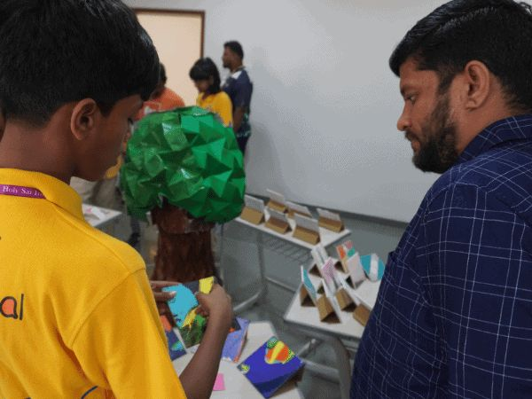
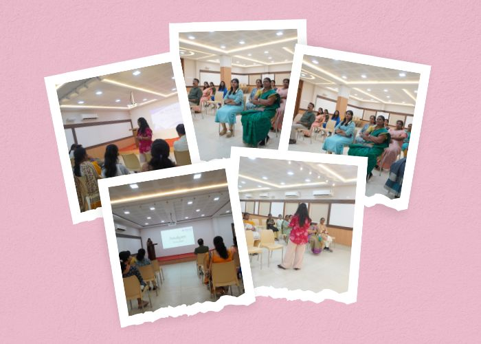
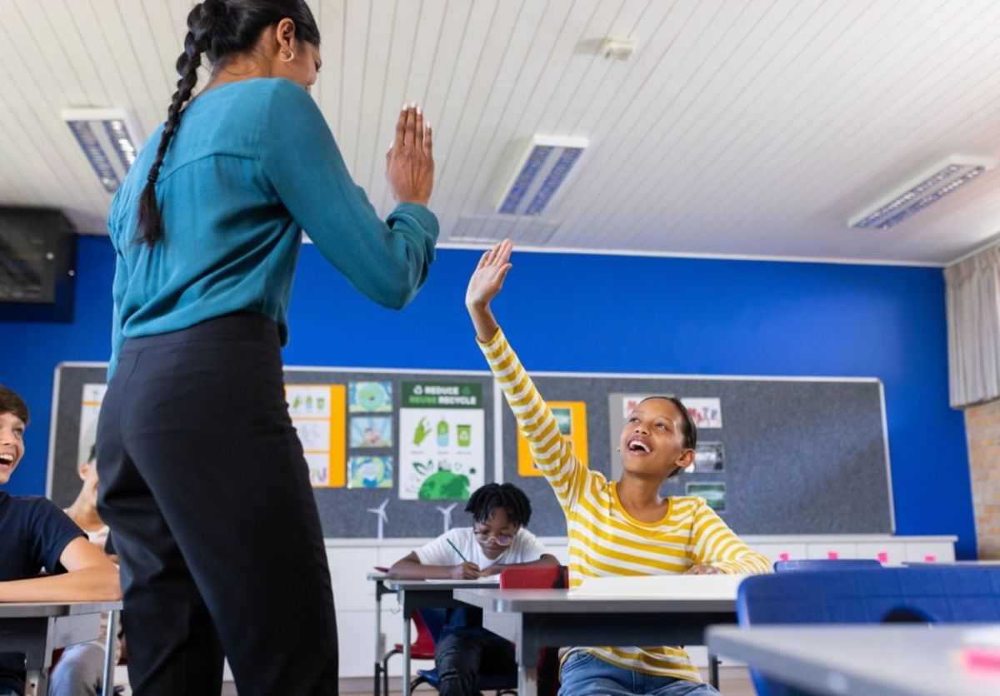

How Emotional Intelligence Shapes Your Child’s Academic Success
In recent years, the importance of emotional intelligence (EQ) in academic success has become more evident. While academic skills like reading, writing, and…
Read ArticleInsights & ideas for educational excellence — 21 articles for parents.

In recent years, the importance of emotional intelligence (EQ) in academic success has become more evident. While academic skills like reading, writing, and…
Read Article
While academics are important, extracurricular activities play a crucial role in shaping well-rounded individuals. At Holy Sai Preparatory School, we…
Read article →
In today’s fast-paced world, it’s becoming increasingly clear that education should do more than just teach children to memorize facts and pass exams.…
Read article →
Education is most effective when it supports academic learning along with emotional and moral growth. Schools play a vital role in helping children find…
Read article →
A child’s school journey is shaped by relationships as much as academics. Strong teacher student relationships create trust and help children feel secure.…
Read article →
A classroom is not just a space for academic learning. It is where children begin to form beliefs about their abilities and develop confidence in expressing…
Read article →
The holiday season is about giving, love, and connection. It’s a time when we reflect on our blessings and reach out to others to share joy. While grand…
Read article →
Life is full of challenges, and sometimes it feels like everything is falling apart. Whether you’re dealing with personal loss, health struggles, or…
Read article →
The holiday season is often a time for joy, but it can also bring about a whirlwind of stress and exhaustion. Between holiday shopping, family gatherings,…
Read article →Learning beyond the Classroom
Read article →Discovering Confidence through Performance
Read article →A strong school community begins with a sense of belonging. At an International School, every student, teacher, and parent is made to feel valued and…
Read article →Sports are more than just games; they’re powerful lessons in teamwork, discipline, and friendship. At an International School, students are encouraged to…
Read article →In a world that is more connected than ever, understanding different cultures is an essential skill for every student. At an International School, students…
Read article →True leadership begins with responsibility. At an International School, students are encouraged to take responsibility for their actions, their learning,…
Read article →
Teachers play a vital role in shaping future leaders. At an International School, teachers go beyond traditional classroom teaching to guide students toward…
Read article →
At an International School, every student is encouraged to express their thoughts, ideas, and opinions with confidence. The school believes that true…
Read article →The world today is more connected than ever before, and students need the skills to thrive in this global environment. At an International School, education…
Read article →In today’s fast-paced world, students often face stress from studies, exams, and daily routines. Mindfulness is a simple yet powerful way to help them stay…
Read article →Sports play a vital role in shaping a student’s character and attitude toward life. At an International School, sports are not just activities, they are a…
Read article →In today’s world, technology has become an important part of every student’s life. At an International School, technology is not just used, it’s fully…
Read article →